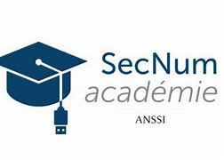
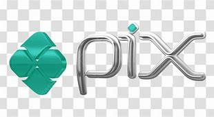
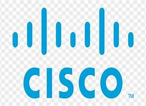
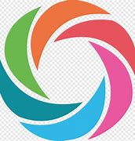
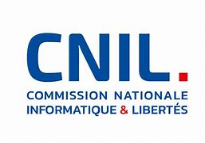

ABOUT ME

Je suis Mariame AIT ALLA, actuellement en BTS SIO (services informatique aux organisations), option SLAM (Solutions Logicielles et Applications Métier). Après avoir découvert la programmation au lycée, j'ai choisi de me spécialiser dans ce domaine pour approfondir mes connaissances et transformer ma passion en compétences tangibles. Grâce à ma formation actuelle, j’ai acquis des compétences en programmation avec PHP, SQL, JAVA. Ce portfolio regroupe mes projets académiques, témoignant de mon parcours et de ma progression.
Compétences
- Maîtrise des langages informatiques : Python, JAVA, HTML, CSS, PHP, SQL, JavaScript.
- Maîtrise de Windows.
- Connaissance des bases de données : MySQL (SQL).
- Réseau : OS (Linux, Windows, Android, IOS) / Virtualisation (Protocole réseau, Adressage/routage).
- Création de site internet.
Expérience professionnelle
- 2018 - Stage d’observation dans un cabinet médical :
- Maîtrise des outils bureautiques.
- Gestion des dossiers.
- Service à la clientèle, travail en équipe.
Formations
- 2023 - 2025 : BTS SIO (Services Informatiques aux Organisations) en cours - Evry.
- 2021 - 2023 : Licence informatique et mathématiques - Faculté d’Évry.
- 2021 : Baccalauréat général spécialité mathématiques et Numérique Sciences Informatiques - Lycée Robert Doisneau.
Langues
- Français : Courant
- Anglais : Apprentissage
- Espagnol : Apprentissage
- Arabe : Courant
Centre d'intérêts
- Cinéma
- Crochet
- Lecture
- Activités bénévoles
Atouts
- Passionnée et créative
- Autonome et rigoureuse
- Concentration
- Dynamique
Mes Certifications




